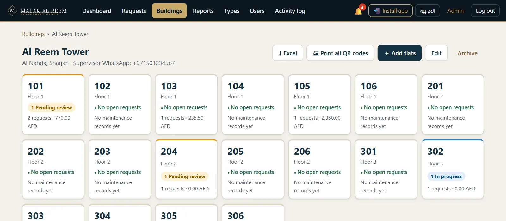
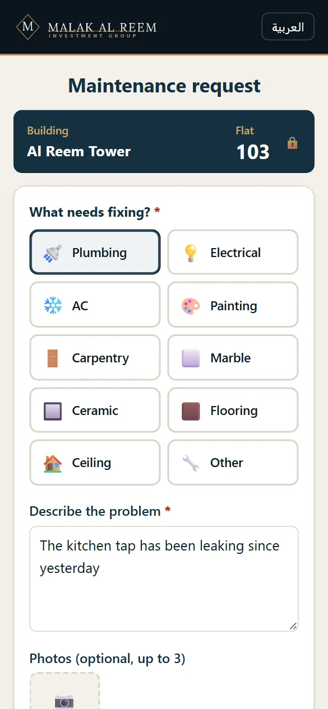
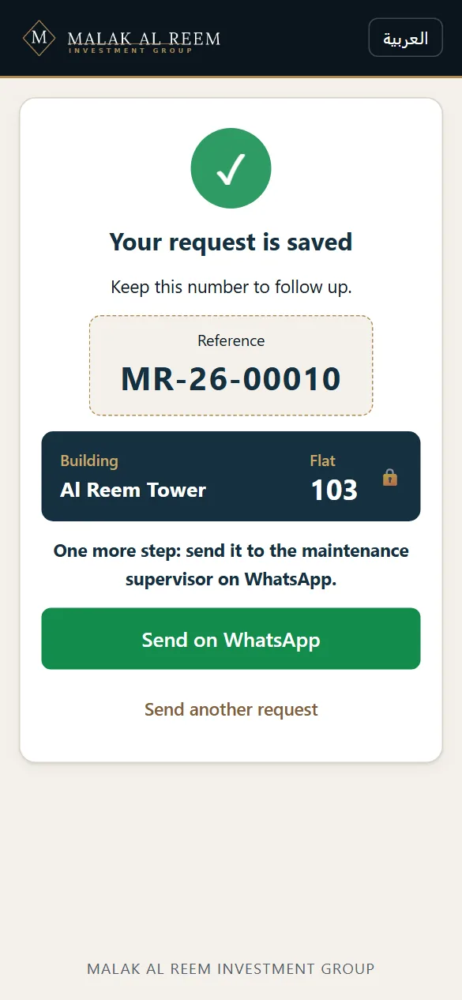
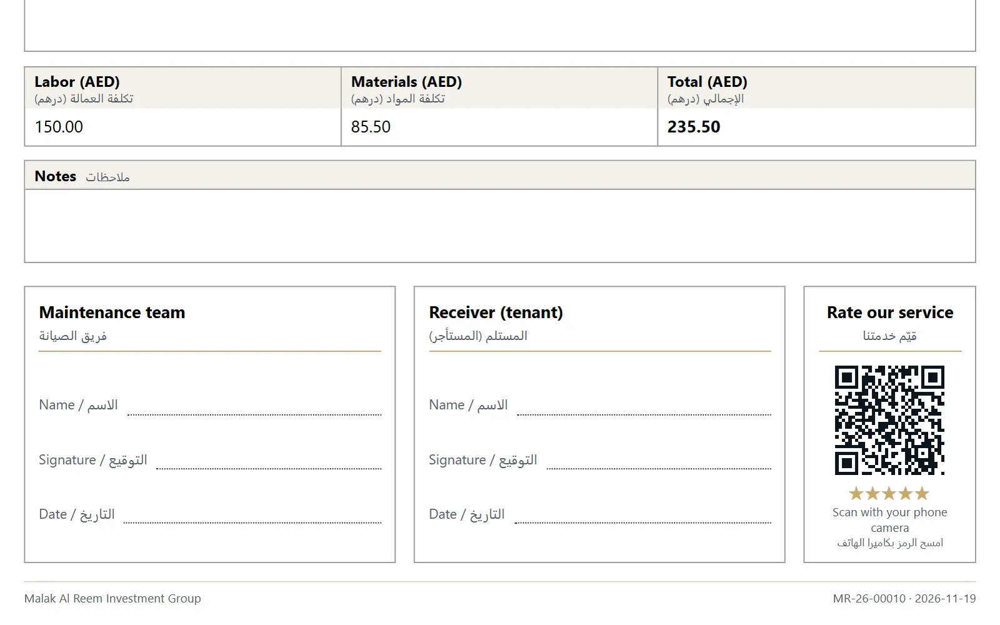
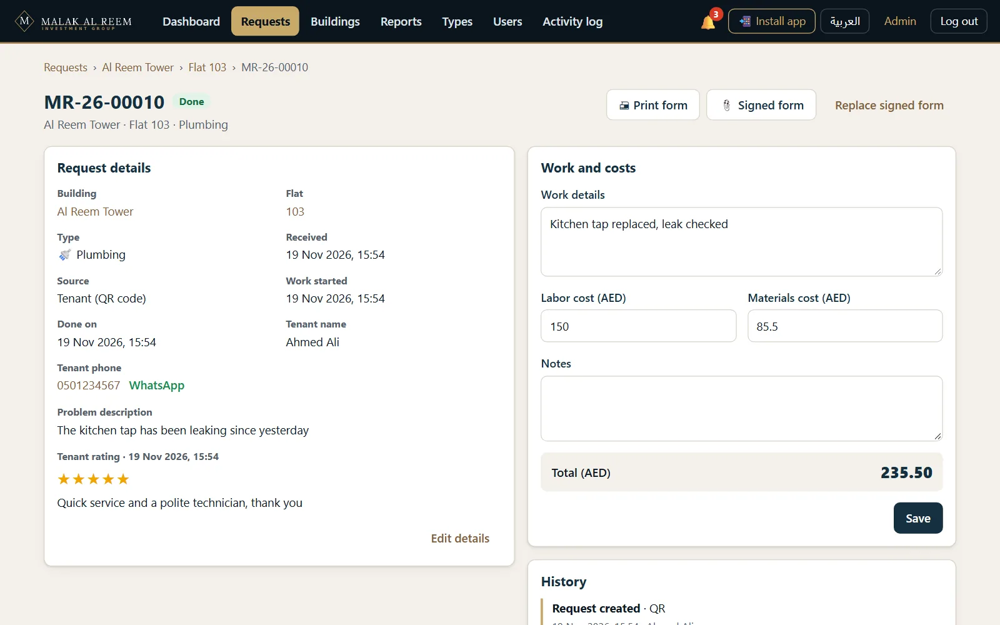
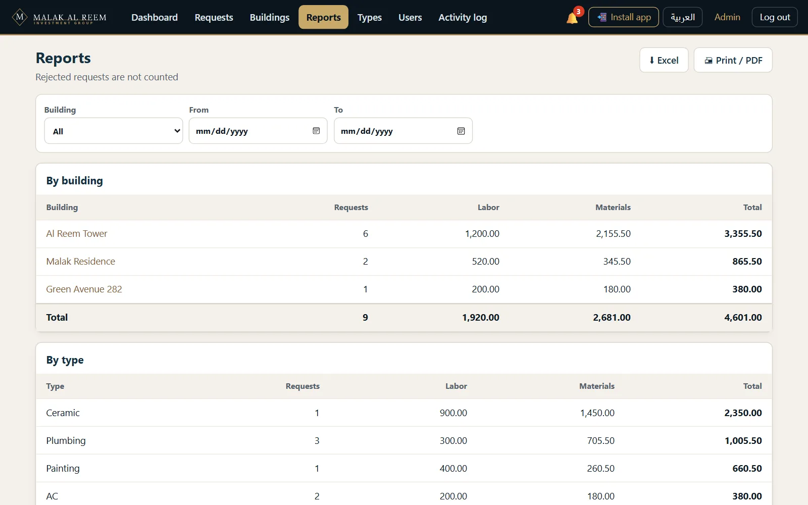
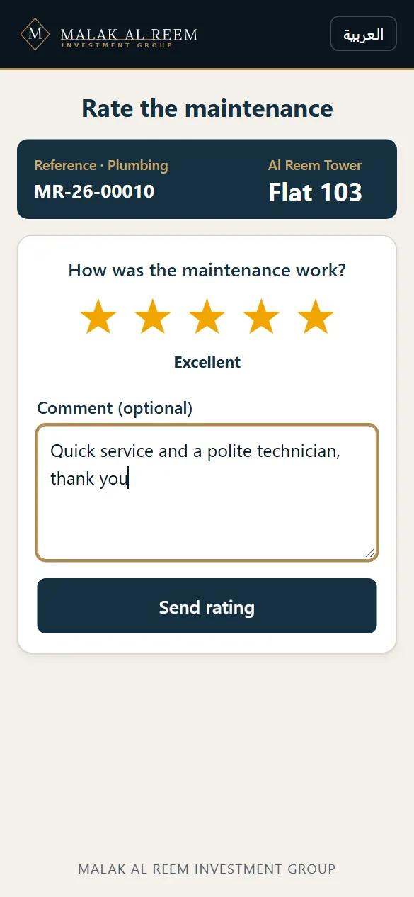
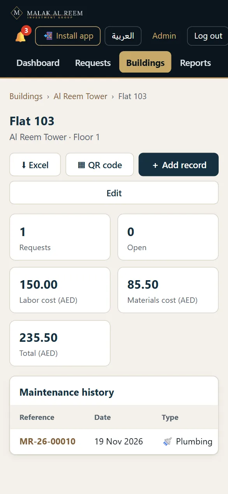

The problem
An investment group rents out flats in six residential buildings in Dubai and Sharjah. A tap leaks or an air conditioner stops, and the tenant calls or messages whoever they know. Nothing recorded which flat had what done, by whom or at what cost, and the maintenance bill of a building could not be added up.
The tenants have no account and should not need one, the supervisors work from their phones, and the brief was clear on cost: nothing to pay each month.
What I built
A QR code in every flat
Each flat gets a label with a QR code. Behind it is a random 192-bit link, so no flat’s address can be guessed from another’s, and the building and flat on the form come from that link on the server, never from the page. The labels print eight to an A4 page in Arabic and English, and a new code stops the old label at once, for when a tenant moves out.
The tenant picks the kind of work, describes it, can add up to three photos, and sends. The request is saved with a reference number first; only then does WhatsApp open on the supervisor’s number with the message written, ready to send. It uses WhatsApp’s ordinary chat link, so there is no business account to verify and no charge per message, and a tenant who never presses send has still filed the request.


From received to done
A request moves from pending review to in progress when the team is sent, and to done when the work is signed off; a duplicate or a prank is rejected with a reason. Every change keeps who made it and when, and a supervisor sees only the buildings the admin gave them.
The team prints an A4 form for the request, in both languages, and the team and the tenant sign it on paper. The request cannot be closed until that form comes back: a PDF of up to 8 MB, or a photo taken on the phone. Files are checked by their content rather than their name, kept in the database in 1 MB pieces instead of a paid file store, and shown only to people allowed to see that building.

That last box is the tenant’s say. Scanning it opens a page with five stars and a comment, once per request, and the rating lands on the request, in its history and in the flat’s record.

Costs and reports
The admin enters labour and materials on each request; supervisors write up the work but cannot change the money. Each flat shows its full history and totals with an Excel download, a building exports all its requests at once, and the reports page breaks the cost down by building, by type of work and by flat for any period, in Excel or printed. Work done before the system can be entered with its old date, so the history starts where it really started.

For the team
A bell counts the new requests inside the site, and a push alert reaches the phone or laptop even when the site is closed. The alert carries no data: it only wakes the device, which then asks the site what is new, so nothing about a request passes through the push service. The site installs as an app on a computer, Android or iPhone, and the users page shows who is online now.
A help assistant answers 40 ready questions about the system in both languages, matched in the browser with no outside service behind it, and keeps the questions it could not answer for the admin; a WhatsApp button reaches the admin for the rest. Passwords are hashed with PBKDF2-SHA256, the session is an HttpOnly, SameSite=Strict cookie, every write needs a same-origin header, and sign-in tries and the public form are limited per address and per flat.


The result
Live on Cloudflare’s free plan, with a Worker and a D1 database and nothing else to pay for. The six real buildings and their 556 flats came from the units already kept as product variants in Odoo, each flat with its layout; shops and service rooms were left out. 106 API checks cover sign-in, rights per building, the request steps, uploads, ratings and alerts.
A 7-page user guide comes in Arabic and English, with a short video in each language. The screenshots here come from a local copy with demo data.